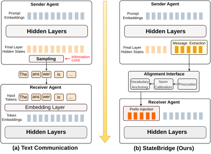

Why it matters왜 중요한가
Two agents can share the exact same weights, the exact same hidden dimension — and still fail to understand each other's vectors. Dimensionality is not compatibility.
두 에이전트가 완전히 같은 가중치, 완전히 같은 은닉 차원을 공유해도 서로의 벡터를 이해하지 못할 수 있다. 차원이 같다는 것과 호환된다는 것은 다른 얘기다.
This is the observation the paper is built on. A decoder's final-layer hidden states and its input token embeddings live in the same ℝd, but not in the same region of it: the model was pretrained to read embeddings at the input layer, while final-layer states were shaped by the next-token prediction objective and by residual accumulation across every layer. Hand a receiver raw hidden states and you have given it vectors of the right shape and the wrong geometry. It will read them, and read them wrong.
논문이 딛고 선 관찰이 이것이다. 디코더의 최종 레이어 은닉 상태와 입력 토큰 임베딩은 같은 ℝd에 살지만, 그 안의 같은 영역에 있지는 않다. 모델은 입력 레이어에서 임베딩을 읽도록 사전학습되었고, 최종 레이어 상태는 다음 토큰 예측 목적함수와 레이어마다 누적된 잔차가 빚어낸 것이다. 수신자에게 날것의 은닉 상태를 건네면, 모양은 맞고 기하는 틀린 벡터를 준 셈이다. 수신자는 그것을 읽되, 잘못 읽는다.
The two existing escapes both have a cost. KV-cache transfer (Cache-to-Cache, LatentMAS) sidesteps the input layer entirely by injecting states across all transformer layers — which binds the method to a specific layer structure. Learned projectors (Interlat, ThoughtComm) fit the mapping, but the projector is then welded to the model and task it was trained on. StateBridge asks a question neither had asked: is the mismatch severe enough to need learning, or is it just a coordinate-system difference that a closed-form transform can undo? The answer, empirically, is the latter — and that turns latent communication from a training project into a function you can call.
기존의 두 탈출구에는 각각 대가가 있다. KV 캐시 전송(Cache-to-Cache, LatentMAS)은 상태를 모든 트랜스포머 레이어에 주입해 입력 레이어를 통째로 우회하지만, 그 대가로 특정 레이어 구조에 묶인다. 학습된 프로젝터(Interlat, ThoughtComm)는 매핑을 잘 맞추지만, 그 프로젝터는 학습에 쓴 모델과 태스크에 용접된다. StateBridge는 둘 다 던지지 않은 질문을 던진다. 이 불일치가 정말 학습이 필요할 만큼 심각한가, 아니면 닫힌 형식의 변환으로 되돌릴 수 있는 좌표계 차이일 뿐인가? 실험적 답은 후자다. 그리고 그 순간 잠재 통신은 학습 프로젝트에서 그냥 호출하는 함수가 된다.

By the numbers핵심 숫자
The results, and what breaks결과, 그리고 무엇이 무너지는가
| Model setting | Single | TextMAS | LatentMAS | StateBridge | Δ |
|---|---|---|---|---|---|
| Qwen3-4B | 71.6 | 78.9 | 80.0 | 82.4 | ↑2.4 |
| Qwen3-8B | 62.6 | 70.2 | 71.8 | 74.3 | ↑2.5 |
| Qwen3-32B | 76.9 | 78.1 | 76.4 | 81.0 | ↑2.9 |
| OLMo3-7B-Think | 71.8 | 73.9 | 55.1 | 76.7 | ↑2.8 |
The gains are not spread evenly, and that pattern is itself the argument. StateBridge helps most exactly where a text handoff has the most to lose — GPQA-Diamond on Qwen3-8B goes 45.5 → 52.5 (+7.0), AIME24 goes 56.7 → 63.3 (+6.6), MedQA on OLMo3 goes 54.0 → 59.0 (+5.0). It loses where the answer is a short exact string: GSM8K drops 2.6 points on Qwen3-8B and 2.5 on Qwen3-32B, which the authors attribute to continuous prefixes disturbing output formatting under exact-match grading — plausible, but they run no experiment isolating format errors from reasoning errors, so it stays a hypothesis.
향상은 고르게 퍼져 있지 않고, 그 편중 자체가 논거다. StateBridge는 텍스트 인계에서 잃을 것이 가장 많은 지점에서 가장 크게 돕는다. Qwen3-8B의 GPQA-Diamond는 45.5 → 52.5(+7.0), AIME24는 56.7 → 63.3(+6.6), OLMo3의 MedQA는 54.0 → 59.0(+5.0). 반대로 정답이 짧은 정확 문자열인 곳에서는 진다. GSM8K는 Qwen3-8B에서 2.6점, Qwen3-32B에서 2.5점 떨어진다. 저자들은 연속 프리픽스가 정확 일치 채점 아래에서 출력 형식을 흔들기 때문이라고 본다. 그럴듯하지만, 형식 오류와 추론 오류를 분리하는 실험은 없어 가설로 남는다.
| Variant | ARC-C | MedQA | GSM8K | MBPP+ | HumanEval+ | Avg. | Δ |
|---|---|---|---|---|---|---|---|
| Full StateBridge | 93.7 | 70.3 | 89.8 | 75.9 | 82.3 | 82.4 | — |
| Ridge regression | 93.0 | 68.0 | 88.6 | 61.5 | 63.6 | 74.9 | ↓7.5 |
| Random noise | 32.2 | 30.7 | 84.5 | 48.2 | 48.2 | 48.8 | ↓33.6 |
| w/o norm calibration | 90.9 | 68.0 | 87.1 | 71.7 | 79.9 | 79.5 | ↓2.9 |
| w/o vocabulary anchoring | 91.7 | 66.7 | 88.9 | 73.0 | 80.5 | 80.2 | ↓2.2 |
The three pieces of the bridge다리를 이루는 세 조각
Orthogonal Procrustes
Treat the K hidden states S and the embeddings R of the tokens they decoded to as two point clouds describing one message in two coordinate systems. Center both (kill the offset), whiten both (stop a few high-variance directions from dominating), then solve minQ ‖SwQ − Rw‖F subject to QᵀQ = I. The solution is one SVD: Q* = UVᵀ. Because Q* is orthogonal it is an isometry — pairwise distances and angles survive. That constraint is the whole point: geometric proximity in hidden space is semantic similarity, so a transform allowed to shear would be allowed to lie.
K개의 은닉 상태 S와, 그것이 디코딩된 토큰들의 임베딩 R을, 하나의 메시지를 두 좌표계로 기술한 두 점구름으로 본다. 둘 다 중심화하고(오프셋 제거), 둘 다 백색화한 뒤(분산 큰 몇 방향이 정렬을 지배하지 못하게), QᵀQ = I 제약 아래 minQ ‖SwQ − Rw‖F를 푼다. 해는 SVD 한 번이다. Q* = UVᵀ. Q*가 직교이므로 등거리 사상이고, 쌍별 거리와 각도가 살아남는다. 이 제약이 핵심 전부다. 은닉 공간에서의 기하적 근접성이 곧 의미적 유사성이므로, 비틀기를 허용한 변환은 거짓말을 허용한 변환이다.
Norm calibration + vocabulary anchoring
Alignment fixes orientation, not scale or neighbourhood. Final-layer states carry ~140× the norm of input embeddings on Qwen3-4B (residual accumulation plus the next-token objective), and left alone they would dominate every dot-product attention score — the receiver would attend to the prefix whether or not it was relevant. So each vector is rescaled to the mean vocabulary-embedding norm. Then each is nudged 30% (α=0.3) toward its nearest vocabulary embedding by cosine similarity. This is not snapping to tokens: the prefix stays continuous, it just moves into a region the model actually saw during pretraining. Removing them costs 2.9 and 2.2 points respectively.
정렬은 방향을 맞출 뿐 크기나 이웃을 맞추지 않는다. Qwen3-4B에서 최종 레이어 상태의 노름은 입력 임베딩의 약 140배다(잔차 누적 + 다음 토큰 예측 목적함수). 그대로 두면 내적 어텐션 점수를 전부 지배해, 수신자는 관련 여부와 무관하게 프리픽스만 쳐다보게 된다. 그래서 각 벡터를 어휘 임베딩의 평균 노름으로 재조정한다. 이어 각 벡터를 코사인 유사도상 가장 가까운 어휘 임베딩 쪽으로 30%(α=0.3)만큼 민다. 토큰으로 스냅시키는 게 아니다. 프리픽스는 연속으로 남고, 다만 모델이 사전학습에서 실제로 본 영역 안으로 옮겨갈 뿐이다. 각각을 빼면 2.9점과 2.2점을 잃는다.
Embedding layer only
The design choice that pays the largest dividend is also the least glamorous: the intervention happens once, at the input embedding layer, via inputs_embeds. No attention mask surgery, no per-layer hooks, no architecture change — the prefix takes positions 0…K−1 and the model treats it exactly like ordinary token embeddings. That is why the OLMo3 result looks the way it does, and it also cuts memory: the paper stores O(Kd) after a single forward hook on the last layer, against O(TLd) for KV-cache transfer.
가장 큰 배당을 주는 설계 결정이 동시에 가장 화려하지 않은 결정이다. 개입은 inputs_embeds를 통해 입력 임베딩 레이어에서 단 한 번 일어난다. 어텐션 마스크 수술도, 레이어별 훅도, 구조 변경도 없다. 프리픽스는 0…K−1 위치를 차지하고 모델은 그것을 평범한 토큰 임베딩과 똑같이 취급한다. OLMo3 결과가 그렇게 나온 이유이고, 메모리도 줄어든다. 마지막 레이어에 훅 하나만 걸어 O(Kd)를 저장하며, KV 캐시 전송의 O(TLd)와 대비된다.
How it works어떻게 작동하나
- Extract. 추출. The sender generates its message normally. A forward hook on the last transformer layer records only that layer's output at each decoding step, and only the final K=64 states are kept — later positions have already aggregated the earlier context. For reasoning models like Qwen3, everything between ⟨think⟩ and ⟨/think⟩ is discarded; only the segment meant for the receiver survives.송신자는 평소대로 메시지를 생성한다. 마지막 트랜스포머 레이어에 건 포워드 훅이 디코딩 스텝마다 그 레이어의 출력만 기록하고, 그중 마지막 K=64개 상태만 남긴다. 뒤쪽 위치는 이미 앞 문맥을 집약하고 있기 때문이다. Qwen3 같은 추론 모델에서는 ⟨think⟩와 ⟨/think⟩ 사이를 전부 버리고, 수신자에게 전할 구간만 남긴다.
- Build the target. 목표를 만든다. Look up the tokens those K states decoded to in the shared embedding matrix: R = Wemb[y]. R is the alignment target — the same message, written in the language the receiver's input layer speaks. Worth noticing: the sampling step still happens; the tokens y are computed and then not transmitted. StateBridge does not skip the discrete bottleneck, it declines to send its output through it.그 K개 상태가 디코딩된 토큰들을 공유 임베딩 행렬에서 찾는다. R = Wemb[y]. R이 정렬 목표다. 같은 메시지를, 수신자의 입력 레이어가 쓰는 언어로 적은 것이다. 짚어둘 점: 샘플링 단계는 여전히 일어난다. 토큰 y는 계산되고, 그리고 전송되지 않는다. StateBridge는 이산 병목을 건너뛰는 게 아니라, 자기 출력을 그 병목으로 흘려보내기를 거부하는 것이다.
- Rotate. 회전. Center and whiten S and R, take the SVD of SwᵀRw = UDVᵀ, set Q* = UVᵀ, then restore R's scale and location: S̃ = SwQ*ΣR1/2 + 1KμRᵀ. One eigendecomposition, one SVD, done once per batch — cheaper than a single autoregressive forward pass.S와 R을 중심화·백색화하고, SwᵀRw = UDVᵀ의 SVD를 취해 Q* = UVᵀ로 두고, R의 스케일과 위치를 복원한다. S̃ = SwQ*ΣR1/2 + 1KμRᵀ. 고유분해 한 번, SVD 한 번, 배치당 한 번이면 끝이다. 자기회귀 순전파 한 번보다 싸다.
- Make it readable. 읽을 수 있게 만든다. Rescale every row to the average ℓ₂ norm of the vocabulary embeddings, then blend 30% toward its nearest vocabulary embedding. Stack the rows into the final prefix S̄ ∈ ℝK×d.각 행을 어휘 임베딩의 평균 ℓ₂ 노름으로 재조정한 뒤, 가장 가까운 어휘 임베딩 쪽으로 30% 혼합한다. 행들을 쌓아 최종 프리픽스 S̄ ∈ ℝK×d를 만든다.
- Inject. 주입. Prepend: X = [S̄; P] where P is the receiver's prompt embeddings. Positions run sequentially, 0…K−1 for the prefix and K onward for the prompt. The receiver runs its standard forward pass. In the four-agent Planner → Critic → Refiner → Judger pipeline, the prompt simply tells the agent its input arrives "in embedding representation format."앞에 붙인다. X = [S̄; P], 여기서 P는 수신자의 프롬프트 임베딩이다. 위치는 순차적으로, 프리픽스가 0…K−1, 프롬프트가 K부터다. 수신자는 표준 순전파를 그대로 돈다. Planner → Critic → Refiner → Judger 4-에이전트 파이프라인에서 프롬프트는 그저 입력이 "임베딩 표현 형식으로" 들어온다고 알려줄 뿐이다.
What to take away그래서, 가져갈 것
Latent communication no longer requires a training run. A rotation, a rescale and a nudge — all closed-form, all computable in less time than one generation pass — beat both a text channel and a trained-free KV-cache channel. The deployment story changes completely when the method has no weights to ship.
잠재 통신에 더 이상 학습이 필요하지 않다. 회전 하나, 재조정 하나, 살짝 밀기 하나 — 전부 닫힌 형식이고 생성 한 번보다 짧은 시간에 계산된다 — 로 텍스트 채널과 무학습 KV 캐시 채널을 모두 이긴다. 배포할 가중치가 없다는 것은 배포 이야기 전체를 바꾼다.
The reframing is the contribution: informativeness was never the bottleneck, readability was. Raw hidden states are strictly richer than tokens and still lose to text when handed over unaligned. And the fix must preserve relative geometry, not minimize reconstruction error — ridge regression fits better and performs 7.5 points worse.
재정의가 곧 기여다. 병목은 정보량이 아니라 가독성이었다. 날것의 은닉 상태는 토큰보다 엄밀히 더 풍부한데도, 정렬 없이 건네면 텍스트에 진다. 그리고 해법은 재구성 오차를 줄이는 게 아니라 상대 기하를 보존해야 한다. 릿지 회귀는 더 잘 맞추고 7.5점 더 못한다.
Where you place the interface decides how far it travels. Embedding-layer injection crossed a model-family boundary that layer-wise KV injection did not survive (OLMo3: 55.1 vs 76.7). If you are designing an agent protocol, the shallowest injection point that works is the one that will still work next quarter.
인터페이스를 어디에 두느냐가 그것이 얼마나 멀리 가는지를 정한다. 임베딩 레이어 주입은 레이어 단위 KV 주입이 넘지 못한 모델 계열 경계를 넘었다(OLMo3: 55.1 대 76.7). 에이전트 프로토콜을 설계한다면, 작동하는 가장 얕은 주입 지점이 다음 분기에도 여전히 작동할 지점이다.
Read the scope carefully before generalizing. Every agent shares one set of weights — the alignment target R is drawn from a shared Wemb, so the heterogeneous case the framing gestures at is explicitly left to future work. The same holds for K: a single global rotation is fit to all K states, which is why K=128 hurts.
일반화하기 전에 적용 범위를 정확히 읽을 것. 모든 에이전트가 하나의 가중치를 공유한다. 정렬 목표 R이 공유된 Wemb에서 나오므로, 문제 설정이 암시하는 이종 모델 사례는 명시적으로 향후 과제로 남겨져 있다. K도 마찬가지다. 전역 회전 하나를 K개 상태 전부에 맞추기 때문에 K=128에서 오히려 나빠진다.